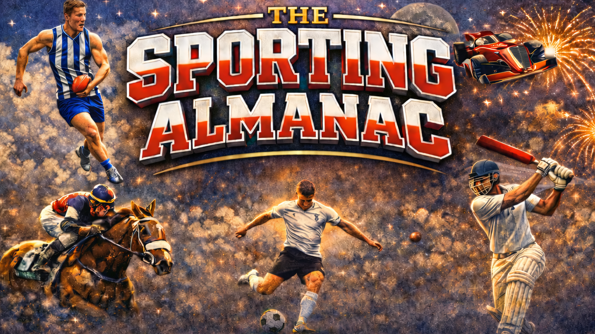

Welcome to The Sporting Almanac
A curated archive of major sporting moments, results, and history — built to be explored, filtered, and preserved.
From here, we can now design the homepage properly without fighting the platform.

A curated archive of major sporting moments, results, and history — built to be explored, filtered, and preserved.
From here, we can now design the homepage properly without fighting the platform.